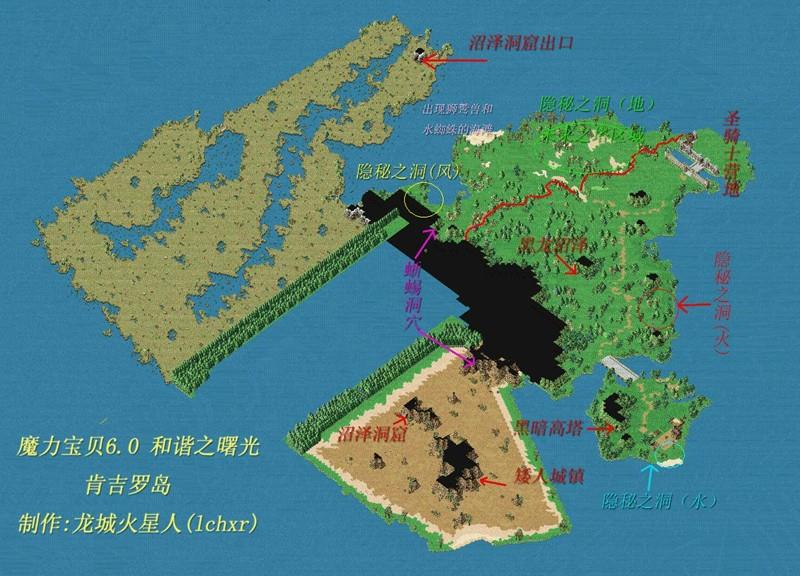

洛伊夫的净化 [ 数据有误？点我修改 ] 历史版本
| 昵称 | 战斗系5转 | 任务类型 | 职业晋阶任务 |
| 所属地图 | 圣骑士营地 | 任务NPC | 洛伊夫 |
| 建议等级 | 120 级 | 可否重做 | 可重做 |
| 必要条件 | 职业达到大师阶段；等级不低于Lv.120 | ||
详情
1.前往圣骑士营地与洛伊夫（100.84）对话，获得【洛伊夫的护身符】。
◆若低于Lv.120或职业未达到大师阶段无法接本任务
◆圣骑士营地前往方法请参考《遗迹》任务
2.前往肯吉罗岛寻找四处隐秘之洞，击倒迷宫内魔物收集【隐秘的徽记】各20个。
◆【隐秘的徽记】可提前收集，无需满足任务必要条件；每名队员都需要收集【隐秘的徽记】各20个
◆隐秘之洞皆为随机迷宫，共19层
◆隐秘之洞（地）：魔物为Lv.94~119混乱的妖草（地20风80）、混乱的穴熊（水40火60）、狂暴的甲虫（地80水20）
◆隐秘之洞（火）：魔物为Lv.109~119狂暴的篮尾龙（地20水80）、混乱的地狱猎犬（水20火80）、混乱的拉扎（地20风80）
◆隐秘之洞（水）：魔物为Lv.109~119混乱的水蓝鼠（水50火50）、混乱的颚牙（地90水10）、狂暴的杀龙之刃（火10风90）
◆隐秘之洞（风）：魔物为Lv.109~119狂暴的烈风翼龙（风100）、狂暴的狂奔鸟（地70风30）、狂暴的虎头蜂（火20风80）
◆四处隐秘之洞所在位置：（圆圈范围仅供参考，实际可能超出该范围）

3.集齐四种【隐秘的徽记】各20个，返回圣骑士营地与洛伊夫对话，交出四种【隐秘的徽记】获得四属性【隐秘的水晶】。
4.持有【隐秘的水晶】进入对应的隐秘之洞，抵达随机迷宫第10层时双击对应的【隐秘的水晶】传送至随机迷宫第11层入口处。
5.通过随机迷宫进入隐秘之洞最底层，与混乱的（土/风/火/水）之守卫对话，进入战斗。
◆战斗信息：
Lv.120混乱的（土/风/火/水）之守卫，血量约30000，邪魔系，地/风/火/水100；技能：攻击、防御、连击、乾坤一掷、气功弹、明镜止水、超强状态魔法
Lv.110（土/风/火/水）守卫的影子，血量约6000，特殊系，属性：全25；技能：攻击、防御、恢复魔法、超强恢复魔法、补血魔法、四属性攻击（单体、强力）魔法
6.战斗胜利后与混乱的（土/风/火/水）之守卫对话，交出对应的【隐秘的水晶】获得四属性【净化的碎片】。
7.击倒最后一个隐秘之洞内BOSS，兑换【净化的碎片】后再与之对话变更地图。与混乱的古树之灵对话获得晋阶资格并传送回召唤之间，任务完结。
◆完成本任务并晋阶后，若已获得第11格技能栏，重解本任务可获得第12格技能栏
◆本任务只需完成一次，之后若职业发生变化，满足晋阶条件后可直接五转，无需再解本任务
五转后变化：
1.职业装备上限与技能上限提升（具体参考本站职业版块）
2.部分职业可习得职业专属五转技能（医生、护士没有5转技能）
◆五转技能学习地点：（学习费用皆为80000G）
职业 | 技能 | 耗魔 | 学习地点 | 指导NPC |
剑士 | 连击·无双 | 200 | 矮人城镇 | 剑圣梅贝斯（112.87） |
骑士 | 护卫·圣域 | 200 | 圣骑士营地总部（116.69）1楼 | 枪圣阿兰考尔（23.76） |
战斧斗士 | 画龙点睛 | 200 | 圣骑士营地总部（116.69）1楼 | 斧圣肖萨加（26.79） |
弓箭手 | 疾风迅雷·闪光 | 200 | 矮人城镇 | 神射手约拉（108.87） |
格斗士 | 气功炮 | 125 | 矮人城镇 | 气功达人阿达尔（105.87） |
教团骑士 | 诸刃·碎玉 | 200 | 圣骑士营地总部（116.69）1楼 | 仲裁者匹瑞诺德（27.12） |
暗黑骑士 | ||||
忍者 | 逃脱术 | —— | 圣骑士营地总部（116.69）1楼 | 忍王阿玛加姆（32.82） |
舞者 | 真·因果报应 | 150 | 圣骑士营地总部（116.69）1楼 | 舞圣帕米拉（19.11） |
盗贼 | 真·一击必中 | 150 | 圣骑士营地总部（116.69）1楼 | 盗贼头目皮雷利（21.13） |
魔术师 | 生命抽取 | 200 | 圣骑士营地总部（116.69）1楼 | 狂魔导士塞丽斯塔（31.11） |
传教士 | 生命祈福 | 350 | 矮人城镇 | 圣者希恩德拉（115.87） |
咒术师 | 强力即死魔法 | 200 | 圣骑士营地总部（116.69）1楼 | 咒缚者西姆拉（19.73） |
巫师 | 强力攻击反弹 | 200 | 圣骑士营地总部（116.69）1楼 | 巫术大师瑟尔曼（28.18） |
强力魔法反弹 | 200 | 巫术大师瑟尔萨（28.19） | ||
驯兽师 | 完美调教术 | —— | 圣骑士营地总部（116.69）1楼 | 兽王乔里克（41.71） |
饲养师 | 精心饲养术 | —— | 圣骑士营地总部（116.69）1楼 | 星之饲养师塞卡（48.71） |
封印师 | 狮子冲击 | 200 | 圣骑士营地总部（116.69）1楼 | 召唤师阿多恩（55.71） |
◆五转技能详情：
技能名称 | 技能效果 |
连击·无双 | 对目标连续攻击2~7次，单次伤害相当于普通攻击的75% |
护卫·圣域 | 护卫我方全体，防御力提高200%，发动概率100% |
画龙点睛 | 伤害提高280%，命中降低40% |
气功炮 | 同时攻击6~10个目标 |
疾风迅雷·闪光 | 可以射出20支箭 |
诸刃·碎玉 | 攻击力提高300%，防御力及抗魔减少60% |
逃脱术 | 提高逃跑成功率（效果似乎不如虚死为上） |
真·因果报应 | 攻击力提高500%，自身受到100%伤害 |
真·一击必中 | 必杀率提高100%，造成目标伤害减少50% |
生命抽取 | 攻击力设定值固定为722 |
生命祈福 | 回复我方全体回复力*480%的生命值 |
强力即死魔法 | 最多对4个目标（T字型）释放 7%的概率成功使目标立即死亡 BOSS战可用 |
强力攻击反弹 | 最多对己方4个目标（T字型）释放 反弹1.2倍物理伤害 |
强力魔法反弹 | 最多对己方4个目标（T字型）释放 反弹1.2倍魔法伤害 |
完美调教术 | 无视宠物等级，忠诚度固定为100 不减少宠物技能耗魔 使用【转职保证书】的情况下转职为其他职业后依然有效 |
精心饲养术 | 宠物参与战斗后获得经验值提高60%（会覆盖饲养技能的效果） |
狮子冲击 | 将一名敌人击出战斗场景（BOSS战不可用） |